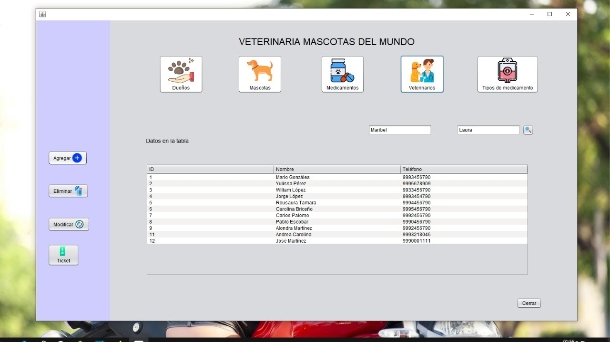
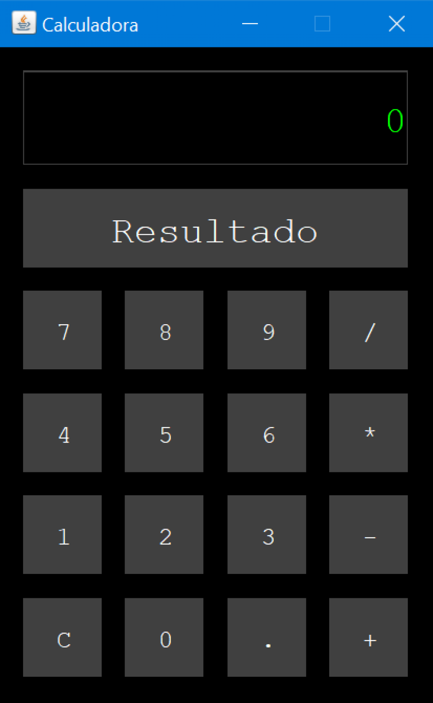
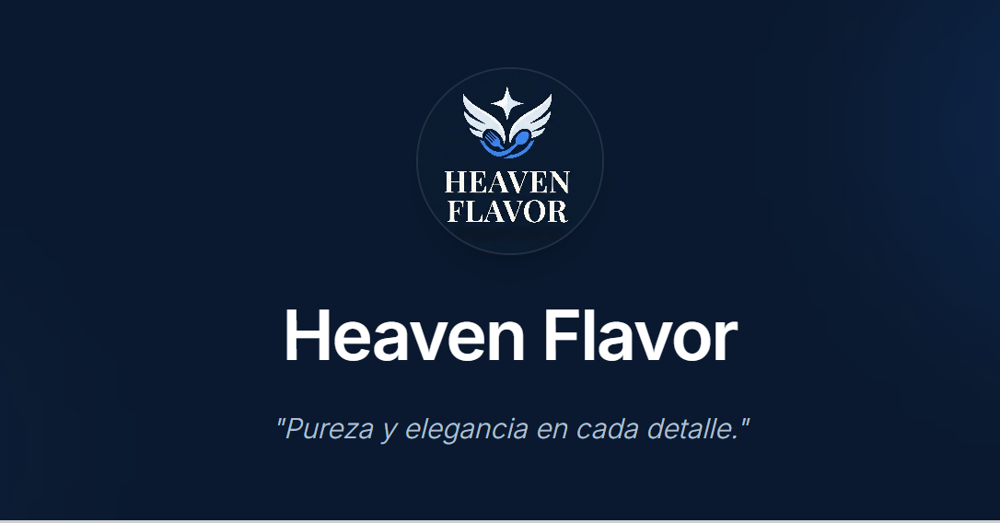
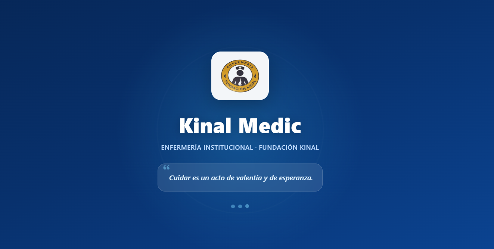

04 · proyectos
Portafolio de aplicaciones

Sistema de Gestión Veterinaria
Desarrollo de un sistema integral para la gestión de pacientes veterinarios, citas y registros médicos.
JavaMySQL

Calculadora
Desarrollo de una calculadora básica con funcionalidades de suma, resta, multiplicación y división.
Java

Sistema de Gestión de Restaurante
Desarrollo de un sistema para la gestión de pedidos, inventario y personal en un restaurante.
Node.jsMongoDB
